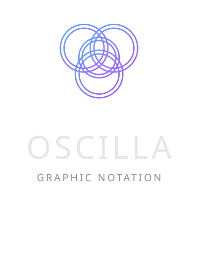

New
Browse
Help
Import…
v0.4.2
Projects
Close
Clients: 0
00:00
00:00
OSC:
waiting…
✎
Markers
scroll
File
New Project…
Save Project As…
Export Project (.oscilla)
Import Project (.oscilla)
Projects
Pages
Export annotations…
Import annotations…
Preferences
Local help
Don't show this again
Got it
Save
↶
R
N
A
1.0×
1
Choose an Option
0
Select Rehearsal Mark…
Close